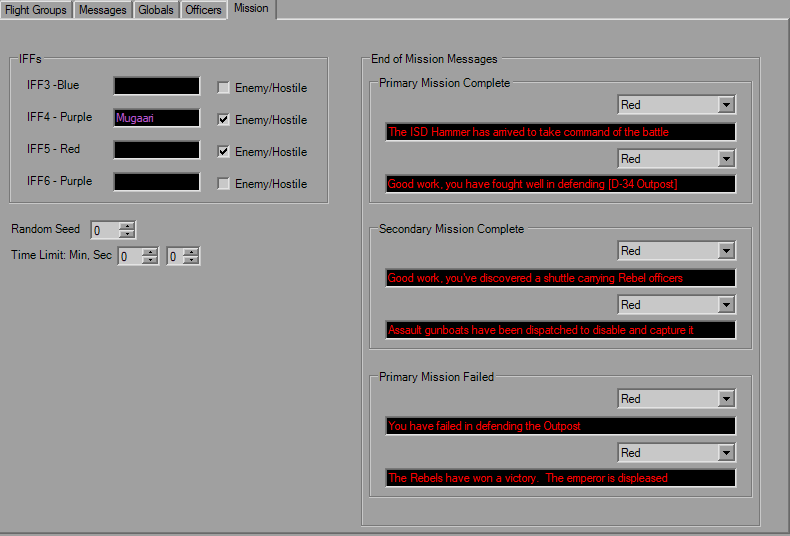

Mission Parameters

The Mission tab is rather simple and straight-forward. The first setting controls which animation you see after you fail a mission by turning your fighter in several smaller pieces.
The IFFs section changes the names and behaviour towards the player. The names have a limit of 12 characters and are used for Goal strings in-game. Check the box if the ships are to be regarded as enemies, leave it unchecked for friendlies.
The End Of Mission Messages should be self-explanatory. They show up when a goal group is declared passed or failed. New in v1.5 is the color selector for those messages.